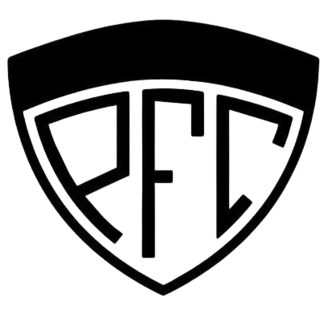

HISTORIA

El Pico Football Club fue fundado el 1 de abril de 1919 en la ciudad de General Pico, La Pampa. Es considerado el “Decano” de los clubes deportivos de la ciudad y uno de los clubes más antiguos de la provincia. Su creación fue resultado de la unión del Pico Athletic Club y el Atlético Ferro Carril Oeste, en un momento en que el fútbol comenzaba a convertirse en una de las actividades deportivas más importantes de General Pico.
Entre sus principales impulsores se encontraban Mario Rudoni, Eduardo Rolero, Gabriel Pedrerol y otros jóvenes vinculados al desarrollo del deporte local. Desde sus primeros años, la institución tuvo como objetivo fomentar la práctica deportiva y generar un espacio de encuentro para la comunidad.
El fútbol fue la actividad que dio origen al club y rápidamente comenzó a ocupar un lugar central en su historia. Pico Football Club fue uno de los clubes que participaron en la organización del fútbol pampeano y posteriormente formó parte de la creación de la Liga Pampeana de Fútbol. Su condición de club fundador y su antigüedad le otorgaron el reconocimiento de “Decano” dentro del deporte de la región.
Durante sus primeros años, el club fue creciendo tanto en cantidad de socios como en infraestructura. En mayo de 1920 adquirió los terrenos donde posteriormente se construiría el Parque Ángel Larrea, uno de los espacios deportivos más importantes de General Pico y un lugar estrechamente relacionado con la identidad de la institución.
Con el paso de las décadas, Pico Football Club amplió considerablemente sus actividades. Además del fútbol, incorporó disciplinas como básquet, tenis, natación, atletismo, ciclismo, boxeo, patín y vóley, entre otras. De esta manera, el club dejó de ser solamente una institución dedicada al fútbol para convertirse en un importante centro deportivo y social de la ciudad.
El básquet tuvo un crecimiento especialmente importante dentro de la institución. Pico Football Club llegó a competir en la Liga Nacional de Básquet, enfrentándose a algunos de los equipos más importantes del país. Durante la temporada 1998-1999 alcanzó el tercer puesto de la máxima categoría, uno de los logros más destacados de su historia deportiva.

En 2019, Pico Football Club celebró sus primeros 100 años de vida. El centenario fue acompañado por diferentes actividades y homenajes destinados a recordar la trayectoria de la institución y a las personas que contribuyeron a su crecimiento a lo largo de las generaciones.
El Parque Ángel Larrea se convirtió con el tiempo en uno de los símbolos más reconocidos del club. Allí se desarrollan diferentes actividades deportivas y sociales y se encuentra el estadio utilizado principalmente para el básquet, además de otros espacios destinados a la práctica de distintas disciplinas.
El club también mantiene una importante actividad dedicada a la formación de niños y jóvenes. El fútbol infantil, las divisiones inferiores y el fútbol femenino forman parte de su propuesta deportiva, permitiendo que nuevas generaciones se incorporen a la institución y continúen construyendo su historia.
Con más de un siglo de trayectoria, Pico Football Club continúa siendo una institución representativa de General Pico. Su historia está ligada al crecimiento de la ciudad, al desarrollo del deporte pampeano y a las generaciones de socios y deportistas que han formado parte del club.
Actualmente, Pico F.C. mantiene una amplia propuesta deportiva y social, conservando el espíritu con el que fue creado en 1919. Sus más de cien años de historia lo convierten en una parte fundamental del patrimonio deportivo de General Pico y en uno de los clubes más tradicionales de La Pampa.